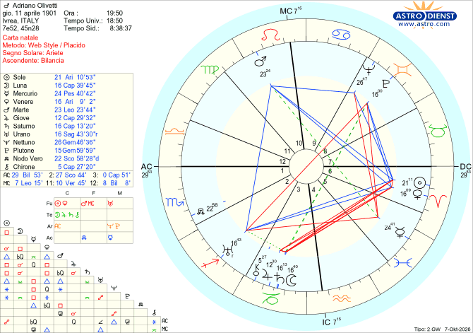

Biografie
Adriano Olivetti
Tema natale, segno zodiacale e analisi astrologica secondo il metodo morpurghiano
NATO A IVREA IL 11/04/1901
ALLE ORE 19:50
ARIETE ASCENDENTE 29° BILANCIA

Chi non ha familiarità con l’astrologia può saltare i passaggi più tecnici: il filo della storia resta comprensibile.
«Può l’industria darsi dei fini? Si trovano questi semplicemente nell’indice dei profitti? Non vi è al di là del ritmo apparente qualcosa di più affascinante, una destinazione, una vocazione anche nella vita di una fabbrica?»
Se credete che un’azienda debba scegliere per forza tra fare soldi e fare del bene, è solo perché non conoscete ancora la storia dell’uomo che ha pronunciato questa domanda.
Adriano Olivetti fu un industriale che diffidava del capitalismo, un ingegnere in cerca di spiritualità, un riformatore sociale capace tanto di crolli nervosi quanto di geniali intuizioni negli affari. Visse una vita intera come tentativo ostinato, e mai del tutto risolto, di dimostrare una cosa sola: che la fabbrica può salvare ed elevare l’uomo, invece di distruggerlo.
Per comprendere la complessa personalità di Adriano è necessario tornare agli anni della formazione. Lo suggerisce lo stesso Tema Natale, che presenta lesioni su tutti i simboli rappresentativi di questa delicata fase della vita: sono lesi Mercurio, il segno dei Gemelli e la III Casa. È nell’atmosfera respirata in famiglia, nelle esperienze giovanili e nella rigida educazione ricevuta che vanno rintracciate le ferite da cui nacque la visione dell’Adriano adulto.
Prima di analizzare il rapporto con le figure genitoriali, mi soffermo sulla II Casa, perché rappresenta l’ambiente in cui l’Io si trova immerso fin dalla nascita ed è anch’essa lesa. Vi è collocato Urano in Sagittario, che riceve un’opposizione da Plutone in Gemelli, in VIII Casa. Si tratta di un aspetto di natura generazionale, ma in questo contesto diventa importante. Plutone è infatti il dispositore della I Casa (l’identità), mentre Urano è il dispositore della IV (le proprie radici). La configurazione mette così in dialogo «chi sono» e «da dove vengo», che in questo caso non convivono in modo armonioso, perché i due pianeti sono in conflitto. Ne nasce una discrepanza tra i desideri più profondi (Plutone in VIII Casa) e le richieste di Urano: pragmatismo, realizzazione pratica e conoscenza tecnica.
Ho voluto trattare subito questo aspetto perché racchiude la tensione primaria da cui scaturì l’intera visione di Adriano. Come vedremo, l’opposizione si inserisce in una configurazione ben più rilevante: un triangolo rettangolo, detto Aspetto di Talete. Si forma quando un pianeta fa da vertice, con un trigono e un sestile, a due pianeti tra loro in opposizione. Qui il vertice è Venere, che offrirà la via d’uscita e la chiave per risolvere questa profonda frattura.
L’IMPORTANZA DELLE FIGURE GENITORIALI NELLA FUTURA VISIONE DI ADRIANO
Questa rigida struttura di dovere e contenimento trova il suo primo specchio affettivo nella madre. Dal Tema Natale di Adriano emerge che Luisa Revel non riesce a cogliere né a soddisfare i suoi bisogni emotivi più intimi. La sua non è una Luna che accoglie o abbraccia. È infatti in Capricorno, segno del suo esilio, e per di più congiunta a Saturno, che in quel segno si trova nel suo domicilio primario ed esprime tutta la sua forza severa. Il messaggio è chiaro: il bisogno emotivo viene subito tradotto in dovere, disciplina, misura. Non «cosa senti», ma «cosa devi fare».
Alla congiunzione partecipa anche Giove, un pianeta edonista. La sua presenza in Capricorno, segno della sua esaltazione per trasparenza, si traduce però nella percezione di un’assenza. Secondo la teoria dei sistemi A e B di Lisa Morpurgo, nel sistema B Giove in Capricorno si trova in esaltazione, mentre nel sistema A, in cui noi ci troviamo, di quella esaltazione resta soltanto un ricordo nostalgico. Ne deriva la privazione di quella spensieratezza e di quella gaiezza che il Capricorno rinnega, perché il dovere viene prima di qualsiasi altra cosa.
La dinamica si chiarisce osservando che Saturno, oltre a rappresentare la norma, in alcuni casi, come ad esempio in questo, è anche simbolo dell’autorità paterna, qui rafforzata dalla quadratura con il Sole. È come se la mancanza di calore e di slancio della madre fosse stata in realtà imposta indirettamente da Camillo, il padre, che le aveva affidato il delicato compito di formare i figli e prepararli alle responsabilità che il futuro avrebbe preteso da loro.
Giove, Saturno e la Luna sono collocati nella III Casa, il settore dell’apprendimento e della comunicazione, e questo conferisce alla figura materna un primario valore pedagogico. Fu infatti la madre a occuparsi in prima persona dell’istruzione dei figli, che per volontà di Camillo non frequentarono la scuola pubblica. Nel ruolo di educatrice non poteva permettersi di essere morbida, e molto probabilmente visse quel compito con dolorosa fermezza.
Un’abnegazione che traspare anche nella dimensione spirituale. Figlia di un pastore della Chiesa Evangelica Valdese, la Revel dovette rinunciare a trasmettere ai figli i propri insegnamenti religiosi, sempre per volontà di Camillo, e si trovò costretta a vivere la propria fede nella più profonda solitudine.
Se la madre incarnava la disciplina e il dovere dell’istruzione quotidiana, il padre rappresentò per Adriano un punto di riferimento ben più monumentale e contraddittorio. La sua influenza è molto più complessa da analizzare.
Camillo era un uomo dalle mille sfaccettature. Leggeva la Bibbia pur dichiarandosi ateo. Si comportava da severo padrone d’inizio Novecento, ma era sempre pronto ad aiutare gli operai in difficoltà. Era benestante, ma professava idee socialiste. Possedeva un rigido codice etico e morale che non si limitava a dichiarazioni di principio: prendeva forma nel rispetto autentico che mostrava verso chiunque, indipendentemente dal ruolo o dalla posizione gerarchica. Rimaneva comunque, per molti versi, un tradizionale patriarca dell’epoca, che non ammetteva replica. Lo mostra chiaramente il Tema Natale di Adriano, in cui il Sole, simbolo dell’Io ma anche del padre, è in Ariete in trigono a Marte in Leone.
È un Sole che comanda per natura, che decide e pretende un’obbedienza immediata: l’Ariete non discute, agisce. Marte in Leone vi aggiunge fierezza, orgoglio e la sicurezza incrollabile di chi sa di avere ragione per diritto naturale (la sovranità del Leone). Non si tratta però di un’autorità che si limita a impartire ordini dall’alto, perché quel Sole è collocato in VI Casa: la dimensione del servizio, del lavoro quotidiano, del «fare» più che dell’apparire. Questa spinta pionieristica e pragmatica trova un riscontro storico nel 1908, quando Camillo fondò a Ivrea la Ing. C. Olivetti & C., la prima fabbrica nazionale di macchine da scrivere, in un’epoca in cui in Italia nessun ufficio faceva ancora uso di questo strumento. Fu un vero apripista e passava moltissimo tempo in officina accanto ai suoi operai, istruendoli e selezionandoli personalmente.
Questo modo di fare riflette una vera e propria filosofia di vita. Il trigono tra il Sole in VI Casa e Marte in X Casa (il vertice, la realizzazione, il comando) descrive infatti un percorso unico e naturale: un’ascesa che muove dal basso (la VI) verso l’alto (la X) senza scorciatoie, fondata sul principio che solo chi ha imparato a servire dal basso è poi davvero in grado di comandare.
Come si traduce questo trigono nella vita di Adriano? Marte in Leone, in X Casa, è la proiezione pubblica e sociale del ruolo che lo attende. Ariete e Leone sono entrambi segni di fuoco, quindi la loro intesa è naturale, senza attrito. Il trigono racconta che fin da giovanissimo Adriano ha la consapevolezza di essere l’erede designato. Il Leone, va ricordato, è il segno della regalità ma anche della continuità dinastica: il figlio che eredita il regno del padre è archetipicamente leonino. Questo rende ancora più naturale, dal suo punto di vista, l’idea di «dover» proseguire l’attività paterna. È una specie di evidenza biologica, a cui non può né vuole sottrarsi.
Camillo, inoltre, gli offrì un modello di autorità coerente tra pensiero e azione: un’autorevolezza incarnata, che si può ammirare senza sentirsi umiliati nell’obbedirle. Questo spiega perché quel Marte in Leone, sostenuto dal Sole in Ariete, si sia tradotto in una vera e propria identificazione con il padre. Non ci troviamo di fronte a un figlio che subisce passivamente un potere ingiusto, ma a un soggetto che interiorizza il valore stesso dell’autorità, assimilando la spinta leonina. Nei fatti, Adriano tenne sempre stretto a sé il potere, lasciando pochissimo margine d’azione ai fratelli come al figlio Roberto. Si governa per il bene dei sudditi e per il loro progresso, ma lo scettro rimane saldo e indiscutibile nelle proprie mani.
Sotto questa naturalezza nel rivestire il ruolo pubblico si consuma tuttavia un sacrificio intimo e doloroso. Adriano avrebbe ardentemente desiderato dedicarsi agli studi umanistici e rimpiangerà per tutta la vita di non aver potuto studiare il latino. Costretto dal padre a iscriversi a Ingegneria Meccanica, riuscì a opporre soltanto una timida e quasi simbolica resistenza: dopo il primo anno passò a Chimica Industriale. Era una disciplina che non lo appassionava affatto, ma che rappresentava l’unico piccolissimo margine di sfida che poteva permettersi nei confronti di Camillo.
È la ferita che scorgiamo nella quadratura tra Luna/Saturno e Venere/Sole, ma soprattutto nella tensione tra Mercurio e Nettuno.
Mercurio rappresenta il pensiero cosciente, la capacità di dire «io voglio questo». Trovarlo in Pesci e in V Casa, il luogo dell’espressione individuale e della creatività, significa che proprio dove Adriano avrebbe dovuto affermare la propria inclinazione personale, il suo pensiero si scopre fragile, evasivo, incapace di tracciare confini netti per il proprio Io. A questa debolezza si contrappone Nettuno in Gemelli, in VIII Casa: l’ambito dell’eredità non solo materiale ma anche psicologica, genetica e di sangue, ossia ciò che si riceve senza averlo scelto e a cui ci si deve sottomettere.
La quadratura tra i due pianeti rivela la vera dinamica interiore. Il giovane Adriano intuisce con il pensiero ciò che vorrebbe per sé, ma quel sapere si infrange contro una marea che viene da prima di lui. La spinta della stirpe dissolve la sua volontà individuale prima ancora che possa farsi protesta. È una rinuncia senza battaglia, la più difficile da elaborare, perché non c’è un nemico chiaro a cui opporsi, ma solo una corrente troppo grande a cui si può soltanto cedere.
Adriano è convinto di aver rinunciato definitivamente alle sue inclinazioni. Fortunatamente non sarà così: nel suo Tema Natale esiste una configurazione molto importante, l’Aspetto di Talete, che lo aiuterà, almeno in parte, a ritrovare quel mondo che credeva perduto per sempre.
Perché proprio l’Aspetto di Talete? Perché l’opposizione tra Plutone e Urano viene recuperata da Venere in Ariete, in VI Casa, attraverso un trigono a Urano e un sestile a Plutone. Prima di analizzare questa configurazione, è necessario raccontare l’esperienza giovanile che segnò Adriano per sempre.
L’IMPATTO DELLA CATENA DI MONTAGGIO SULLA FUTURA VISIONE D’IMPRESA DI ADRIANO
Camillo aveva una visione della vita riassunta in una sua celebre frase: «Un uomo che deve dirigere altri uomini deve prima di tutto sapere cosa significa obbedire e faticare come loro».
Così, dopo la laurea nel 1924, Adriano fu assunto nella fabbrica paterna come apprendista operaio per un anno, senza godere di alcun privilegio. Scoprì ben presto che quel lavoro era una vera e propria mutilazione dello spirito. Compiere lo stesso gesto per otto ore al giorno prosciugava ogni energia creativa e intellettuale, ed era imposto da un ritmo veloce dettato dall’esterno. A questo si aggiungevano il rumore, lo sporco e un grigiore davvero opprimente.
Astrologicamente, questa esperienza è evidenziata con straordinaria chiarezza dalla quadratura tra la congiunzione Luna/Saturno in Capricorno e la congiunzione Sole/Venere in Ariete. La Luna è anche il principio dell’abitudine, di ciò che si sedimenta e si ripete meccanicamente. In Capricorno, e congiunta a Saturno, questa funzione si irrigidisce e si trasforma in disciplina, dovere e automatismo. Saturno in Capricorno rappresenterebbe di per sé il tempo lento della concentrazione e della riflessione. Qui, tuttavia, riceve la quadratura dall’Ariete, segno del tempo veloce, collocato nella Casa del lavoro (la VI). Di conseguenza Saturno può esprimersi unicamente nella rigidità del gesto ripetitivo: la velocità richiesta e cronometrata non lascia spazio né alla distrazione né al libero pensiero.
Luna, Saturno e Giove si trovano inoltre nella III Casa, il luogo astrologico della mente e dell’elaborazione, chiusi in Capricorno, che ne comprime lo spazio. Il giovane Adriano non subisce quindi soltanto la ripetitività: subisce un sistema che nega all’uomo la possibilità di stare con la propria mente.
Il Sole in Ariete vorrebbe agire secondo i propri impulsi, e il lavoro ripetitivo ne è la negazione letterale: lo stesso gesto, identico, ripetuto mille volte, gli risulta insopportabile. In VI Casa, inoltre, il Sole è costretto a definirsi proprio attraverso quel lavoro quotidiano. Venere in Ariete, congiunta al Sole, apporta una sensibilità estetica viva e immediata, che davanti al grigiore dell’officina soffre profondamente. La quadratura mette così in tensione due istanze opposte: un senso del bello che chiede di respirare e un ambiente che lo soffoca.
Infine, il Sole nella Casa dei subordinati (la VI) porta Adriano a vivere l’azienda partendo dal basso, mentre Saturno rappresenta la distanza e la gerarchia verticale, per cui chi sta sopra non si mescola con chi sta sotto. La quadratura con Sole e Venere in Ariete racconta che questa distanza gli è, fin da subito, del tutto insopportabile.
A complicare e drammatizzare ulteriormente il quadro interviene il viaggio di studi negli Stati Uniti, nel 1925. Visitando le grandi fabbriche americane, a cominciare da quelle di Henry Ford, Adriano comprende lucidamente che l’azienda del padre non potrà reggere a lungo la concorrenza internazionale senza riorganizzarsi. Per sopravvivere bisogna razionalizzare la produzione, introdurre l’organizzazione scientifica del lavoro e irrigidire ancora di più la catena di montaggio.
Si crea così un corto circuito etico e personale lacerante. Adriano sa di dover introdurre a Ivrea un sistema spietato, di cui conosce per esperienza diretta tutto il peso degradante. Ma qui la ferita non riguarda solo gli operai: riguarda lui stesso.
Plutone è il dispositore della I Casa, quella dell’identità, del «chi sono io». L’opposizione tra Urano e Plutone, cioè tra la spinta tecnologica e industriale e l’identità profonda, rappresenta quindi il dramma di un uomo che, per obbedire al mandato paterno e intraprendere studi tecnici anziché umanistici, ha dovuto sacrificare e «seppellire» una parte fondamentale di sé.
LA VIA D’USCITA È NELL’ASPETTO DI TALETE
Come impostare dunque un’organizzazione industriale efficiente senza distruggere l’anima dei lavoratori e, al tempo stesso, senza soffocare definitivamente la propria? È esattamente a questo punto che entra in gioco l’Aspetto di Talete, trasformando un dilemma distruttivo in una straordinaria sintesi creatrice.
L’opposizione tra Urano (la tecnologia, l’efficienza fredda) e Plutone in VIII Casa (la forza cieca del potere economico, ma anche l’identità profonda di Adriano, sacrificata) trova un canale di scarico e di guarigione in Venere in Ariete, in VI Casa. Venere forma infatti un trigono con Urano e un sestile con Plutone. Pianeta della bellezza, dell’armonia, della cultura e dell’arte, collocata nella Casa del lavoro quotidiano, diventa la chiave di volta. Adriano comprende che non può rifiutare la fabbrica, ma può trasformarla, facendovi entrare ciò che ama di più: poeti, sociologi, psicologi, artisti, architetti e grafici.
In questo modo l’Aspetto di Talete compie un doppio prodigio. Da un lato permette ad Adriano di salvare gli operai dall’alienazione del lavoro meccanico, umanizzando l’ambiente della fabbrica. Dall’altro gli offre la possibilità di riscattare e riprendersi quella parte di sé a cui aveva dovuto rinunciare. Portando gli umanisti in fabbrica, Adriano non si limita a riformare l’industria: salva se stesso, rimette al centro il proprio Io e riconcilia la sua vera identità con il ruolo che il destino gli ha assegnato.
Questa riconciliazione non si esaurisce in un gesto simbolico. Adriano la traduce in una serie di realizzazioni concrete che, ancora oggi, appaiono di una radicalità sorprendente. Fa costruire fabbriche con grandi vetrate, perché la luce possa entrare a beneficio psicologico di chi vi lavora. Apre una biblioteca aziendale consultabile anche durante l’orario di lavoro e introduce mense in cui si organizzano spettacoli teatrali e conferenze. Estende l’assistenza medica, e persino dentistica, non solo ai dipendenti ma alle loro intere famiglie. Istituisce un servizio di assistenti sociali, veri e propri psicologi dell’ascolto, che operano con piena autonomia dalla direzione, sottratti a ogni logica di controllo aziendale. Integra gli asili nido nell’architettura della fabbrica, rende la maternità interamente retribuita e la prolunga a nove mesi, e garantisce salari ben superiori alla media nazionale e orari di lavoro ridotti.
Non sono concessioni elargite dall’alto, come quelle con cui già il padre aiutava i dipendenti in difficoltà, ma diritti riconosciuti alla persona. È la stessa Venere in VI Casa, già chiave dell’Aspetto di Talete, a farsi ora prassi quotidiana e a permeare ogni gesto organizzativo di cura.
UNA PARENTESI
Oggi, nel 2026, il contratto a termine e lo sfruttamento del personale dipendente sono diventati la «regola», il welfare aziendale si è ridotto per lo più a un vantaggio fiscale per le imprese e la ricchezza si concentra sempre più nelle mani di pochi. In un’epoca simile colpisce la radicalità di quel modello: un’azienda che si prendeva cura dell’essere umano nella sua interezza, non del lavoratore come mera funzione produttiva.
È proprio questa visione dell’uomo integro a impedire ad Adriano di tracciare un confine tra dentro e fuori. La cura per la persona nell’ambiente di lavoro non può prescindere dalla cura per la terra che quella persona abita: la bellezza, per lui, non può restare confinata dentro le mura della fabbrica.
Urano, che abbiamo visto governare la IV Casa (l’ambiente familiare), si trova in Sagittario, segno dei grandi spazi aperti, dell’orizzonte che non conosce recinti. È un’energia che, portata dentro il lavoro quotidiano attraverso Venere, spiega perché Olivetti non pensi mai l’industria come un corpo separato dal paesaggio che la ospita. Il luogo di lavoro deve inserirsi in armonia con il territorio, che corrisponde alla II Casa, l’ambiente in cui il soggetto è immerso fin dalla nascita, e non violentarlo.
Da questa stessa intuizione nasce la sua attenzione, precocissima per l’epoca, contro lo spopolamento delle campagne. Concede ai propri dipendenti prestiti agevolati perché possano continuare a coltivare la terra invece di abbandonarla per trasferirsi in città, ben sapendo che sradicare le persone dal proprio territorio significherebbe, a catena, trasformare le città in metropoli caotiche e invivibili. Il suo pensiero urbanistico, che varrà a Ivrea il riconoscimento di patrimonio UNESCO dell’umanità (2018), nasce da qui: fabbrica, abitazioni e paesaggio devono restare un tutto armonico, mai spezzato.
Urano in II Casa significa però anche organizzazione del territorio. Nella prospettiva dell’astrologia dialettica di Lisa Morpurgo, Urano è molto più della semplice spinta alla ribellione o dell’imprevisto che rompe gli schemi: è il principio stesso dell’utilità pratica, della tecnica e dell’organizzazione efficiente. Nel trigono con Venere in VI Casa, la carica venusiana perde ogni astrattezza. L’armonia estetica e l’integrazione con il paesaggio non sono pensate come un esercizio contemplativo, ma si traducono nella creazione di una vita agevole e fluida per chi abita quel territorio. In concreto, con Urano in II Casa il territorio non viene soltanto preservato, ma organizzato e strutturato perché possa offrire risposte ai bisogni quotidiani della comunità: servizi a misura d’uomo, infrastrutture intelligenti, tempi di vita armonizzati.
Per Adriano Olivetti la dimensione locale di Ivrea non è che il primo tassello di un disegno ben più ampio. Se l’armonia tra fabbrica e paesaggio può salvare un territorio, essa contiene già in sé i germi per riformare l’intera società. Il passo successivo gli appare quasi inevitabile: se il modello funziona a Ivrea, perché non estenderlo a un paese intero?
A questo punto entra in scena Plutone, che nella tradizione morpurghiana governa i grandi processi collettivi e dunque anche la politica. Si trova per l’appunto nella sua Casa cosignificante, l’VIII, la Casa della trasformazione, di ciò che eccede il singolo per toccare la collettività. Questo Plutone non è isolato: è lo stesso pianeta già coinvolto nel sestile con Venere, la medesima energia armonizzante che ha ispirato il progetto industriale e urbanistico.
Vale la pena approfondire che cosa sia, esattamente, questa Venere. Non è soltanto l’artefice di ogni aspetto risolutivo incontrato finora. Governa anche la XII Casa, il luogo del sacrificio per il bene collettivo, della compassione verso i più deboli, di chi si prende cura di chi non può chiedere aiuto da solo. Ne è il dispositore perché quella Casa è occupata dalla Bilancia, il segno più sociale (non socievole, ma sociale) di tutto lo zodiaco: quello che pensa per natura in termini di equilibrio tra le parti, di giustizia distributiva, di armonia collettiva. Se Venere governa questa Casa, la sua funzione in tutto il tema non è dunque soltanto estetica, cioè bellezza per la bellezza, ma profondamente etica: bellezza come strumento di giustizia. È questa, probabilmente, la ragione più autentica per cui il trigono e il sestile che Venere forma con Urano e Plutone riescono a trasformare un conflitto strutturale in energia costruttiva. Non si limitano a decorare la ferita: le danno uno scopo collettivo.
C’è poi un altro aspetto che rende questa vocazione politica ancora più urgente, quasi ineludibile. Nettuno, anch’esso in Gemelli e in VIII Casa, forma un sestile con Marte in Leone, in X Casa. Nettuno è il pianeta dell’ideale, del sacrificio di sé per qualcosa di più grande, della vocazione che chiama prima ancora di essere scelta. Marte in Leone in X Casa è invece l’affermazione pubblica di sé, il destino sociale che Adriano ha già imparato, fin da ragazzo, a portare senza vacillare. Il loro sestile racconta perciò una politica sentita non come ambizione personale, ma come missione. La spinta politica di Adriano non nasce da un’ambizione di potere fine a se stessa, ma dalla medesima sorgente di bellezza e cura che ha animato ogni sua altra scelta: quella Venere-Bilancia che abbiamo appena visto reggere l’intero impianto etico del tema.
Nel 1947 fonda così il Movimento Comunità, nel tentativo di portare su scala nazionale ciò che a Ivrea è già realtà vissuta: l’azienda vista non come macchina da profitto, ma come organismo vivente, dotato di un’anima e di una responsabilità verso la comunità.
L’impatto di questo ideale con la realtà si rivelò doloroso. La presenza di Mercurio in Pesci, in precisa quadratura a Nettuno in Gemelli in VIII Casa, si tradusse nella tragica incapacità di farsi comprendere chiaramente. Un pensiero così alto, poetico, fluido e visionario (Pesci/Nettuno) diventava, nell’espressione concreta dei discorsi e dei programmi (Mercurio), fumoso e incomprensibile per le masse.
Mercurio è inoltre collocato in V Casa, la Casa del Sole, cosignificante del Leone, dove tutto dovrebbe essere brillante, teatrale e vitale. Quando però è occupata da un Mercurio in Pesci e per di più leso, il risultato è una comunicazione che perde smalto, appare trattenuta o addirittura «spenta» e può tradursi in una mancanza di incisività verbale. Il tono di voce potrebbe essere basso, monocorde, privo di guizzi e di quella verve dinamica che ci si aspetterebbe dalla V Casa.
Giancarlo Lunati, che lo seguì durante la campagna elettorale e lavorava in Olivetti dal 1955 come specialista di gestione del personale, nel suo libro Con Adriano Olivetti alle elezioni del 1958 lo descrive come impacciato, agitato e incapace di parlare con chiarezza, quindi inefficace. In effetti, nelle elezioni politiche del 1958 il risultato fu una delusione cocente: il Movimento Comunità ottenne un unico seggio, destinato proprio ad Adriano. A Ivrea e nel Canavese la gente lo votò in massa, perché lì le persone avevano potuto toccare con mano il benessere concreto che la sua visione aveva portato nella loro vita quotidiana. Fuori da quel territorio, invece, il suo messaggio non riuscì a essere compreso dalla gente comune.
Se la sfera pubblica segnò il limite della sua comprensibilità, quella privata non fu meno complessa. La sintesi tra etica ed estetica era infatti destinata a scontrarsi anche con la dura realtà degli affetti familiari. Un’utopia così totalizzante non poteva che risultare incomprensibile ai suoi familiari, come dimostra con chiarezza la complessa trama del suo Tema Natale.
Il primo scoglio nasce dalla III Casa, il settore dei fratelli e della comunicazione, occupata dalla congiunzione Luna/Saturno. Questa è in quadratura con la VI Casa, a sua volta occupata da Sole e Venere in Ariete e cosignificante della Vergine, che indica amministrazione, calcolo e gestione prudente delle risorse. La quadratura tra i due gruppi planetari descrive un potenziale conflitto di metodo all’interno della famiglia. Da un lato c’è la logica di Saturno in Capricorno, quella desiderata dai familiari: misura, prudenza, attenzione al bilancio. Dall’altro c’è l’impulso di Sole e Venere in Ariete, che spinge Adriano a investire senza remore in espansione, cultura e servizi sociali.
La quadratura è per sua natura un aspetto di attrito che non si risolve spontaneamente, e la storia dell’azienda sembra confermarlo. Sul finire degli anni Cinquanta Adriano guidò l’acquisizione della storica azienda americana Underwood, un’operazione di forte respiro internazionale ma dal costo finanziario molto pesante. Fu un investimento coerente con l’impulso dell’Ariete a espandersi senza esitazioni, ma di quelli che una logica più prudente e conservativa avrebbe probabilmente sconsigliato.
Tornando alla situazione familiare, lo scontro tra i fratelli fu inasprito anche dalla potente opposizione tra Plutone in Gemelli, in VIII Casa, e Urano in Sagittario, in II Casa. Da un lato c’era la spinta plutoniana alla trasformazione radicale dei grandi processi collettivi, fortemente desiderata da Adriano. Dall’altro, la necessità di proteggere le risorse concrete e il patrimonio di famiglia (la II Casa), desiderata dai fratelli. A questo si aggiunse l’autoritarismo di Adriano, alimentato dalla sovranità del suo Marte in Leone, che lo portò spesso a decidere da solo, scavalcando i familiari e creando forti tensioni.
La vera eccezionalità di Adriano sta nel fatto che in lui coesistono due nature che raramente si trovano insieme nella stessa persona. Da una parte c’è un vero e proprio capitano d’industria. Dall’altra c’è un impegno sociale vissuto quasi come una vocazione, con una tensione che sconfina nel mistico: non la semplice applicazione di buoni principi, ma qualcosa che somiglia a una missione da compiere. Lo colse bene il sociologo Franco Ferrarotti, che definì Adriano un «utopista tecnicamente provveduto». L’espressione racchiude esattamente questo paradosso: un uomo capace di sognare una società radicalmente nuova, pur mantenendo i piedi saldamente piantati nella realtà industriale e contabile.
La sua abilità negli affari è dovuta senza dubbio al trigono tra il Sole in Ariete e Marte in Leone in X Casa, che gli ha donato la capacità di guidare, di affermarsi pubblicamente, di trasformare un’azienda locale in una realtà riconosciuta nel mondo.
Sotto la sua direzione la Olivetti diventa un riferimento per il design industriale. Le macchine per scrivere escono dalle fabbriche con una cura estetica fuori dal comune (si pensi alla Lettera 22, famosa in tutto il mondo). Nel 1952 il MoMA di New York dedica all’azienda la mostra «Olivetti: Design in Industry». Nel 1954 viene inaugurato lo showroom sulla Fifth Avenue, che colpì gli americani per il design e l’eleganza. Negli stessi anni l’azienda compie il salto verso l’elettronica con l’Elea 9003 (1959), primo calcolatore elettronico italiano. Nel 1965, cinque anni dopo la morte di Adriano, arriva la Programma 101, tra le prime macchine a introdurre l’idea stessa di personal computer e ad anticipare di anni ciò che il resto del mondo avrebbe scoperto solo più tardi.
Fu lui, tra l’altro, a intuire per primo qualcosa che prima di allora non esisteva in questi termini: l’idea di un’identità visiva coerente per un’azienda, con pubblicità, prodotti e spazi pensati come un unico linguaggio riconoscibile. È quello che oggi chiameremmo un brand, e che allora rese la Olivetti immediatamente distinguibile in tutto il mondo.
Quella stessa energia che gli permise di costruire, innovare e sognare ebbe però un prezzo: i periodi di depressione che lo accompagnarono per tutta la vita. Non fu una fragilità estranea alla sua grandezza, ma la sua altra faccia.
La I Casa, quella dell’identità, è quasi interamente occupata dallo Scorpione, e il suo governatore, Plutone, si trova in Gemelli, in VIII Casa, la sua dimora naturale: il luogo delle crisi, delle morti simboliche e delle rinascite. È una posizione che trasforma l’esistenza in una serie di cicli di distruzione e rigenerazione. Nel segno dei Gemelli porta tutto questo nella mente, rendendola iperattiva, inquieta, incline a caricarsi di informazioni, progetti e responsabilità ben oltre il limite.
L’opposizione di Plutone con Urano in II Casa, quella delle risorse fisiche ed energetiche, rende questa spinta elettrica e discontinua: lunghi periodi di investimento senza risparmio, seguiti da cali improvvisi in cui l’energia sembra staccarsi di colpo. A questo si aggiunge Mercurio in Pesci, che assorbe il mondo con un’empatia quasi senza filtri, e la sua quadratura con Nettuno, che offusca la percezione dei propri limiti corporei. Adriano non sentiva arrivare la stanchezza, si lanciava in avanti con l’entusiasmo dell’utopista, e il vuoto lo coglieva quando l’ideale si scontrava con la realtà.
Mercurio e Nettuno sono inoltre in ricezione reciproca, ciascuno nel segno governato dall’altro, e questo li lega in modo indissolubile: il pensiero rischia di dissolversi proprio quando dovrebbe fare da argine. Infine, tutti i pianeti coinvolti cadono in segni mutevoli (Gemelli, Pesci, Sagittario), che danno flessibilità e visione ma poca capacità di fermarsi e recuperare.
LA MORTE MISTERIOSA
La sua fine, improvvisa e avvolta nell’ombra, sembra scritta nello stesso tema. Il 27 febbraio 1960, a 58 anni, Adriano morì su un treno diretto a Losanna. Secondo la biografia di Paolo Bricco la causa fu un’ischemia cerebrale, ma molti giornali dell'epoca scrissero di infarto. Senza autopsia, nulla poté essere verificato.
Il Tema Natale ne offre, a mio avviso, una prova. Plutone, governatore della I Casa, quella dell’identità, finisce in VIII, la Casa della morte: la persona stessa di Adriano sembra consegnarsi a un destino che resta in parte nascosto, e l’idea di una morte misteriosa è già nella posizione di Plutone. Nettuno, anch’esso in VIII, evoca ciò che è torbido e sfuggente e, nella simbologia classica, rimanda ad avvelenamenti e intossicazioni. La sua quadratura con Mercurio in Pesci, in V Casa, colpisce la vitalità stessa di Adriano. Non è un caso che lo scontro avvenga tra la V Casa e l’VIII, che sono naturalmente in quadratura: la prima è la Casa della creatività e, per la tradizione morpurghiana, della vita stessa; la seconda è quella della morte. La morte è necessaria al bene collettivo, ma non lo è mai per la vita del singolo, ed è per questo che i due ambiti si trovano in tensione.
Mercurio e i Gemelli, coinvolti nella configurazione, suggeriscono poi che il movente vada cercato nel commercio e negli affari. Infine l’opposizione tra Plutone e Urano in Sagittario introduce l’elettronica (Urano) e gli Stati Uniti, che per la tradizione morpurghiana sono rappresentati dal Sagittario. È su questo asse che nasce il sospetto di chi, ancora oggi, ritiene che l’avanzata della Olivetti nell’elettronica fosse diventata scomoda per gli americani. A rafforzarlo contribuì la morte di Mario Tchou, il brillante ingegnere a capo del progetto elettronico dell’azienda, scomparso in un incidente stradale nel novembre 1961. Si è parlato di un’operazione dei servizi segreti americani per eliminare un concorrente pericoloso, ma è un’ipotesi mai dimostrata.
Poiché ogni simbolo astrologico ha più significati, l’astrologia non può valere come prova incontestabile, e senza autopsia non lo sapremo mai. Resta però la coincidenza, sorprendente quanto basta per alimentare il dubbio.
UNA CURIOSITÀ
È interessante riportare un episodio curioso tratto dalla biografia di Adriano Olivetti scritta da Paolo Bricco (Adriano Olivetti. Un italiano del Novecento), che l’autore racconta con queste precise parole:
“Nell’ultima settimana è comparso un segno strano, su cui Adriano ha scherzato: prima gli si è rotto un orologio d’oro che gli avevano regalato i suoi dipendenti, poi si è rotto quello nuovo che ha comprato per sostituire il primo. Il tempo per lui si è fermato due volte.”
All'inizio ci siamo chiesti se l'industria possa darsi dei fini. Adriano Olivetti non ha lasciato una risposta teorica, ma una prova concreta: per alcuni decenni, a Ivrea, è accaduto davvero.
Il suo Tema Natale ci aiuta a capire come. Una ferita profonda, l'opposizione tra Urano e Plutone, cioè la tecnica che sembrava chiedere il sacrificio dell'identità, non si è chiusa in rinuncia o in rancore. Ha trovato in Venere un ponte, e la bellezza, intesa come giustizia, è diventata il metodo per trasformare la fabbrica. Lo stesso Mercurio in Pesci che nutriva la sua visione gli ha impedito di farsi capire oltre i confini di Ivrea e lo ha esposto alla stanchezza e alla depressione. In lui grandezza e limite nascono dagli stessi simboli.
Il cielo non spiega ogni cosa, ma mostra la forma di una vita in cui il conflitto non fu eliminato: fu trasformato in opera. Forse è questa la sua eredità più attuale. Non un modello da copiare, ma una domanda che non dobbiamo mai smettere di porci: i fini dell’industria possono semplicemente trovarsi nell’indice dei profitti?